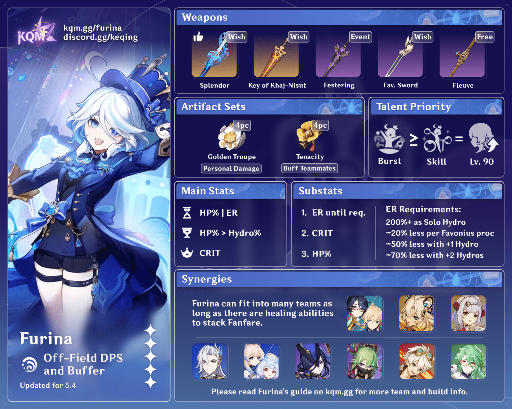
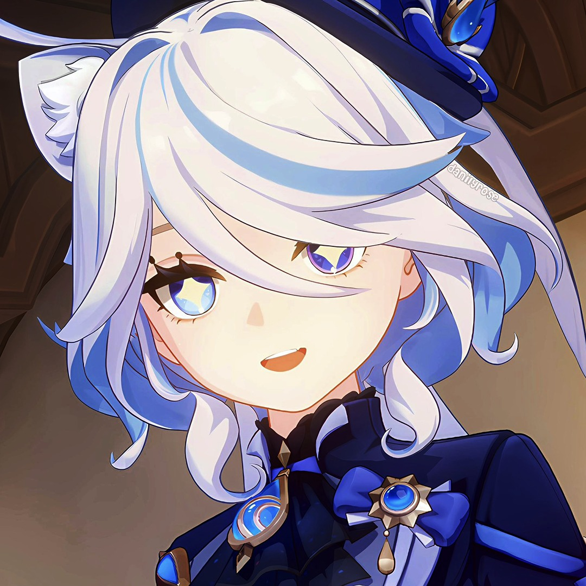
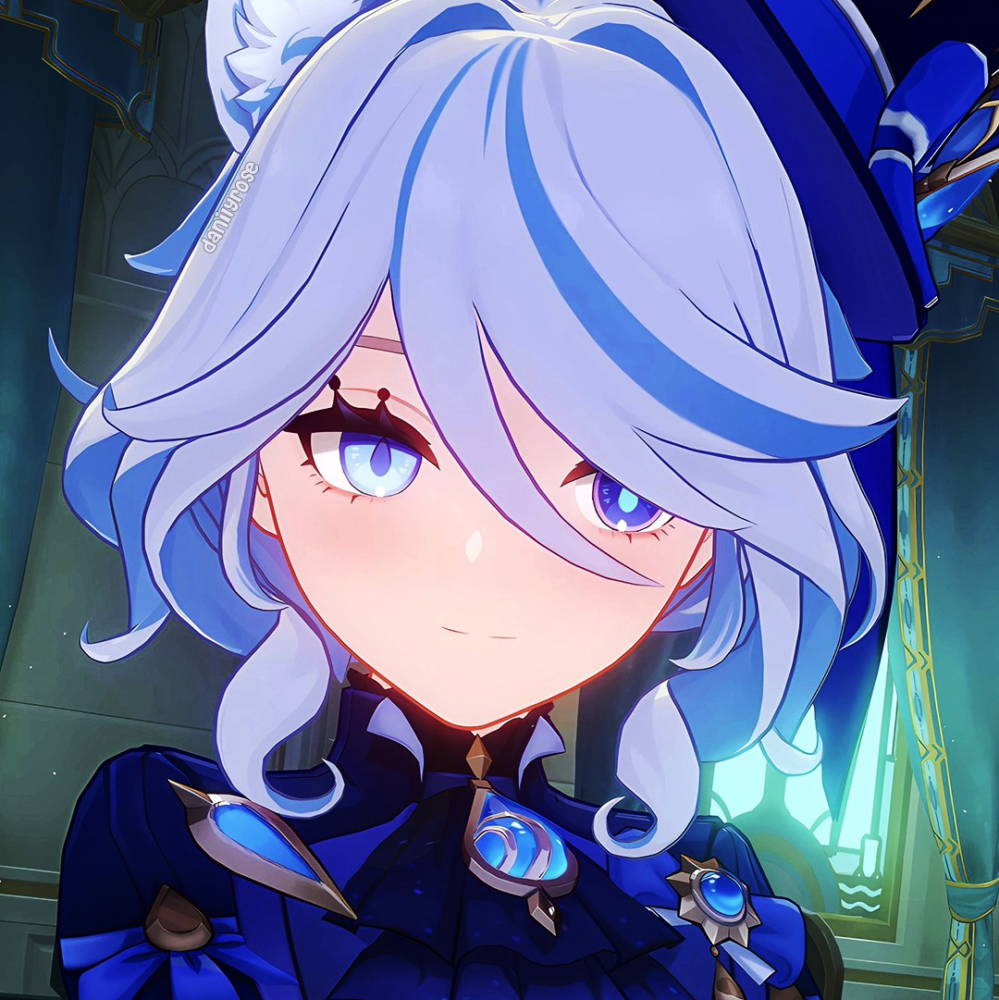
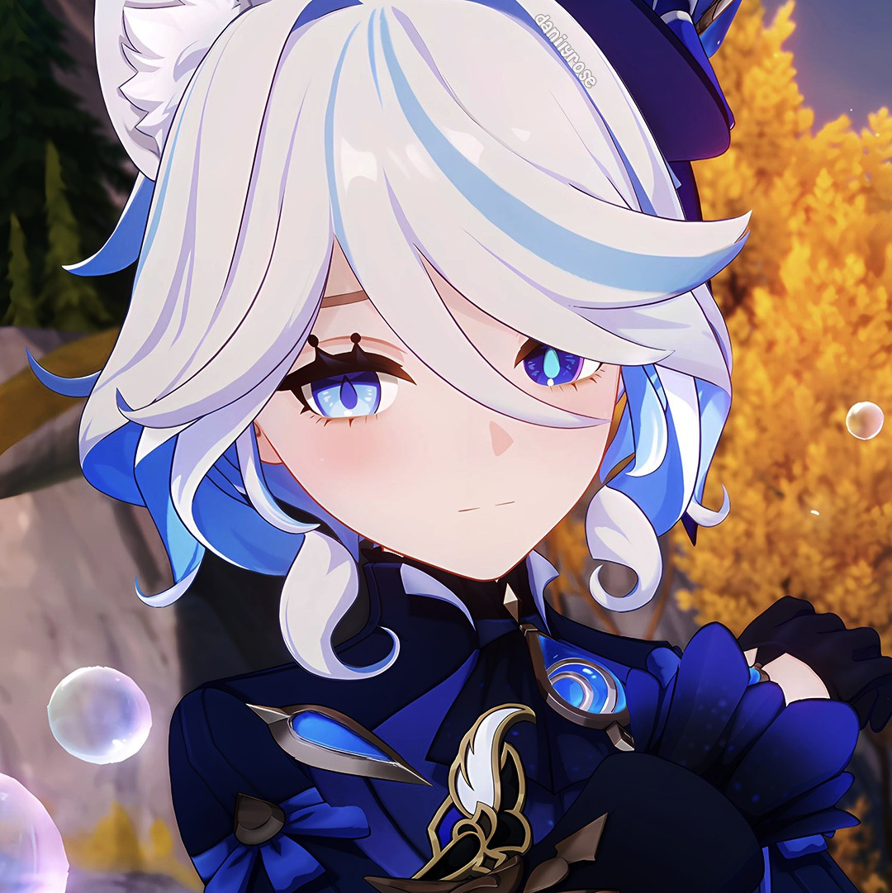
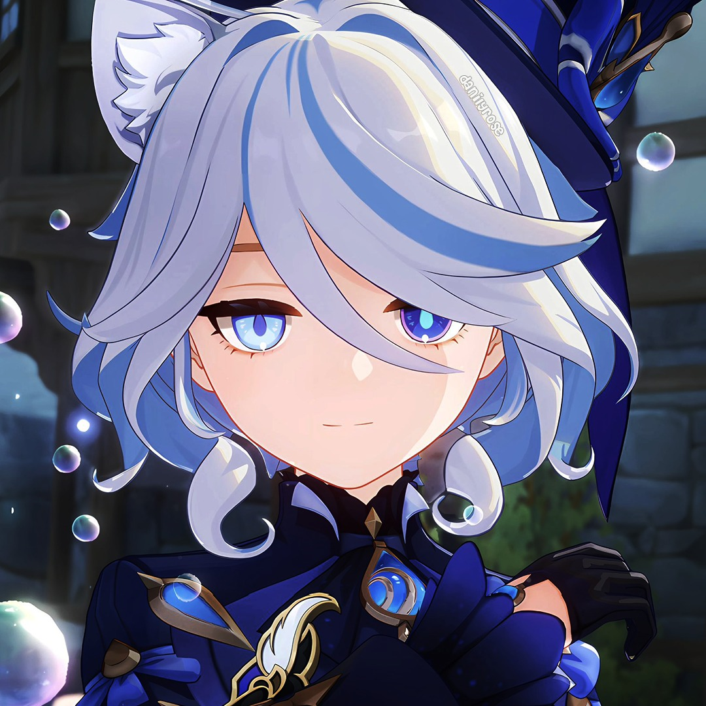
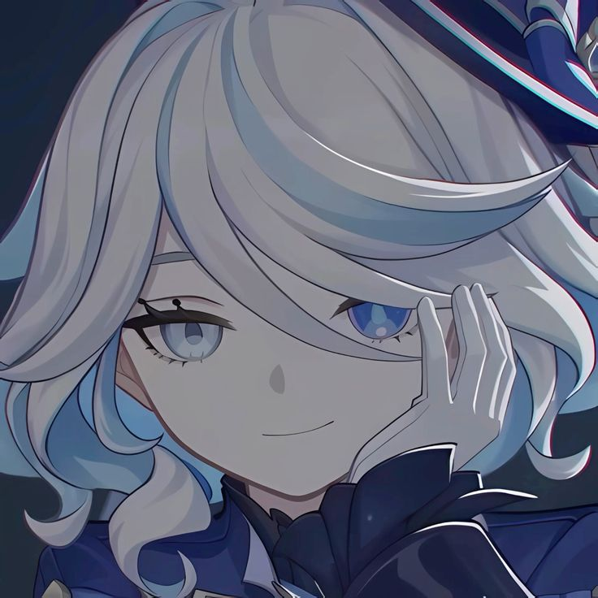
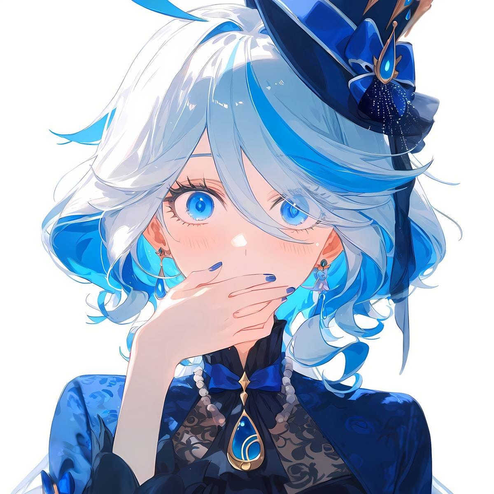
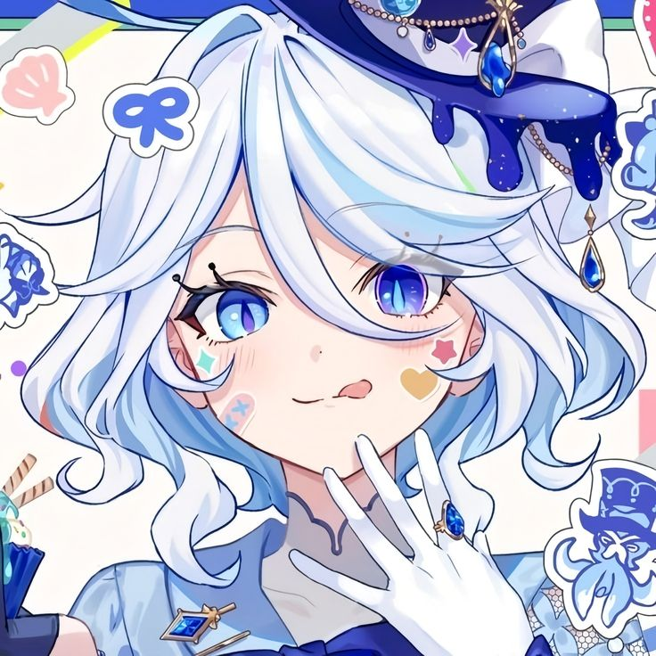

Furina de Fontaine is a playable Hydro character in Genshin Impact who
can alternate between Pneuma and Ousia alignments. Introduced as the
flamboyant and overconfident Hydro Archon, Furina's theatrics are
eventually revealed to be a public persona, which she later discards
in favor of living a relatively humbler life as an actress and
artistic consultant.
Flamboyant and imprudent, Furina lives for the thrill of the
courtroom, often speaking in a manner peppered with bravado and drama.
She is impatient and has a childlike temper, and she will occasionally
make judgments that she doesn't mean, which Neuvillette frequently has
to control while conducting a trial to avoid complications. While she
enjoys being in the spotlight, she only does so when it is focused at
her positively, breaking down in complete shambles should something go
out of plan and will try to save face at the first possible
opportunity. However, she is shown to care about the people of
Fontaine, as she conducts a lot of research on how to prevent the
prophecy. It is later revealed that Furina was not the true Hydro
Archon. Focalors, the successor of Egeria, had separated her divinity
from her body and spirit; Furina was the Archon's body and spirit but
had no powers. Focalors used Furina as a way to deceive the Heavenly
Principles in order to prevent the result of the prophecy regarding
Fontaine from becoming a permanent reality. Furina was tasked with
maintaining the guise of an Archon and cursed by Focalors so that she
could not die nor pursue her own happiness so long as Focalors lived.
As a new "human," she had difficulty taking the role but eventually
mastered it. Aware of the prophecy that would doom Fontaine, Furina
assumed the role of Hydro Archon for 500 years; while she was
successful in this task, it wore her down mentally so that she
suffered from severe self-esteem issues and paranoia, as shown when
the Traveler convinced the court audience that she was a fraud in her
trial. Despite being undying due to being cursed by Focalors, Furina
remained fearful of situations that seemed deadly, as she pleaded the
Knave to not kill her during an attack for the Hydro Gnosis, and was
hesitant in dipping her hand into Primordial Seawater to prove whether
she is the Hydro Archon during a trial. As a result, she deeply fears
rising water levels or the Knave being mentioned to her. Upon being
freed of her role as an acting Archon, Furina had returned to her
normal self, but without the burdens associated with her role. While
she is still flamboyant and dramatic at times, she now displays a
softer, humbler and insecure side of herself. At first, she struggled
coming to terms with her role being over, believing that her newfound
freedom meant that she was no longer needed, and had trouble reaching
out for the people closest to her while she was the Archon, such as
Neuvillette and Clorinde. She also planned to retire from the stage
despite her love of acting, finding it difficult due to the mental
ordeal of having maintained the persona of an Archon for centuries.
After being comforted by the Traveler, Neuvillette, and Navia as well
as getting invited to a party by Clorinde, she realizes that her
journey of self-discovery means that she no longer has to live her
life in solitude. Eventually, she is able to regain the courage to
move forward and go back onstage for the first time since her
abdication, and learns to accept her identity not as the Hydro Archon,
but simply as herself, culminating in her receiving a Hydro Vision.
Both as her time as archon and human, she is shown to greatly enjoy
fancy confections and desserts, such as cake.








Character Demo - "Furina: All the World's a Stage" | Genshin Impact